생물분류기사(동물) (2020-09-26 기출문제)
1과목: 계통분류학
1. 국제동물명명규약에서 동물 명명에 적용되지 않는 것은?
- 가축
- 잡종동물
- 화석동물
- 절멸한 동물
(정답률: 69%)

2. 동소적 종분화의 요인과 가장 관계있는 것은?
- 지리적 장벽
- 창시자효과
- 염색체의 배수성
- 개체군의 이동성
(정답률: 71%)
3. 후생동물(Metazoa)은 어떤 동물을 지칭하는가?
- 다세포 동물
- 낭배의 원구가 입이 되는 동물
- 낭배의 원구가 항문이 되는 동물
- 성체가 되어도 유생의 형태를 유지하는 동물
(정답률: 56%)
4. 식물의 APG 분류체계에서 진정목련군(Eumagnoliid)에 속하지 않는 분류군은?
- 목련목
- 후추목
- 녹나무목
- 미나리아재비목
(정답률: 69%)
5. 해면동물의 특징이 아닌 것은?
- 방사대칭 또는 비대칭이다.
- 자극에 의해 국부적이고 독립적으로 반응하고 신경계는 없다.
- 다세포 동물로 몸은 중교에서 기원한 느슨한 세포의 집합으로 되어있다.
- 군체는 특수한 기능을 수행하는 여러가지 개충으로 구성되어 다형현상을 나타낸다.
(정답률: 57%)
6. 종을 분류하고 기재하는 방법으로 종의 원기재에 있어서 저자가 근거로 삼은 단일표본(하나의 표본을 근거로 신종을 기재할 때) 또는 원저자가 기재 중에 하나의 표본에 한하여 모식 또는 이와 동등한 표현으로 특기한 표본은?
- Holotype(완모식)
- Syntype(총모식)
- Paratype(부모식)
- Neotype(신모식)
(정답률: 71%)
7. 특정한 지역에 한정되어 분포하는 종은?
- 아종
- 품종
- 고유종
- 자매종
(정답률: 72%)
8. 콩꼬투리에 해당되는 열매의 주된 종류는?
- 취과(aggregate)
- 협과(legume)
- 삭과(capsule)
- 시과(samara)
(정답률: 74%)
9. 분류의 방법론에 관한 세 학파 중 "진화분류학" 학파에 해당되는 내용은?
- 상동성은 고려되지 않는다.
- 분류군 사이에 진화의 속도 차이가 존재한다.
- 가능한 많은 형질을 사용한 전체적 유사성에 근거하여 분류한다.
- 파생형질상태를 이용하여 공동조상에서 유래한 후손들을 추정한 후 이것에 기초하여 분류군을 설정한다.
(정답률: 62%)
10. 장미과의 아과에 대한 검색표이다. ( )안에 알맞은 것은?
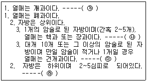
- ㉮배나무아과 ㉯앵도나무아과 ㉰장미아과 ㉱조팝나무아과
- ㉮조팝나무아과 ㉯앵도나무아과 ㉰장미아과 ㉱배나무아과
- ㉮앵도나무아과 ㉯장미아과 ㉰배나무아과 ㉱조팝나무아과
- ㉮장미아과 ㉯배나무아과 ㉰조팝나무아과 ㉱앵도나무아과
(정답률: 59%)
11. 동물학명을 바르게 표시한 것은?
- Vertebrata
- Coluber novae-hispaniae
- Homo sapiens, Linnaeus
- Sesarma (Holometopus) haematocheir
(정답률: 57%)
12. 총포가 있는 두상화서를 가지며 5수성 합판화관과 취약웅예로 특정지을 수 있는 분류군으로 가장 적합한 것은?
- 콩과
- 인동과
- 용담과
- 국화과
(정답률: 64%)
13. 동물계 종의 3/4 이상을 차지하는 큰 분류군으로 순환계는 개방혈관계를 가지고 혈액은 대체로 무색이며 호흡색소로는 헤모글로빈 또는 헤모시아닌 등을 가지는 것은?
- 중생동물문
- 윤형동물문
- 절지동물문
- 해면동물문
(정답률: 78%)
14. 한 식물체에 한 종류의 단성화(unisexual flower) 만을 가지는 것은?
- 자웅이주(dioecious plant)
- 잡성주(polygamous plant)
- 자웅동주(monoecious plant)
- 양성주(hermaphroditic plant)
(정답률: 62%)
15. 린네는 동물범주를 5계급으로 설정하였고, 그 후 알려진 동물의 종류가 많아짐에 따라 그 수가 20여개 이상으로 늘어났는데, 그 중 기본적인 7범주에 해당하지 않는 것은?
- Class
- Family
- Genesis
- Kingdom
(정답률: 72%)
16. 물푸레나무과의 주요 특징으로 가장 거리가 먼 것은?
- 대개 잎이 대생한다.
- 수술은 보통 2개이다.
- 꽃잎은 주로 이생한다.
- 암술은 보통 2심피가 합생한다.
(정답률: 56%)
17. 다음에서 설명하는 분류학적 연구방법은?
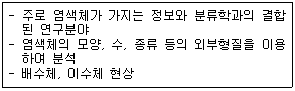
- 생화학적 연구방법
- 세포학적 연구방법
- 면역학적 연구방법
- 분지론적 연구방법
(정답률: 73%)
18. 조류의 몸무게를 가볍게 하면서 동시에 강하게 나는 힘을 얻을 수 있도록 적응된 기관계의 묶음은?
- 골격계와 호흡계
- 골격계와 배설계
- 골격계와 생식계
- 골격계와 소화계
(정답률: 74%)
19. 척삭의 주요 기능에 해당하는 것은?
- 소화기능을 돕는다.
- 심장의 기능을 돕는다.
- 근육의 부착축이 된다.
- 말초신경의 역할을 한다.
(정답률: 64%)
20. 콩과식물에 속하지 않는 것은?
- 자운영
- 풀싸리
- 광대싸리
- 조록싸리
(정답률: 48%)
2과목: 환경생태학
21. 삼림군락에 대한 가장자리 효과를 완충하는 스크램블 기능을 하며, 숲내부로 침투하는 측광차단, 숲바닥의 수분증발과 풍동(風動)을 완충하는 역할을 하고, 칡군락, 찔레꽃군락, 누리장나무군락, 예덕나무군락 등이 해당하는 군락은?
- 소매군락(hem community)
- 몸통군락(body community)
- 망토군락(mantle community)
- 임관군락(canopy community)
(정답률: 67%)
22. 혐기상태에서의 유기물 분해에 관여하지 않는 생물군은? (단, 고등생물의 특정 근육세포는 제외)
- ferns
- yeasts
- bacteria
- protozoa
(정답률: 57%)
23. 생물권에서 일부 특수한 물질이 먹이 연쇄단계를 거치면서 확산 및 희석되지 않고 오히려 농축되는 현상은?
- 생물량
- 먹이연쇄
- 생물농축
- 생태피라미드
(정답률: 79%)
24. 개체군 밀도 조절 요인 중에서 내적 요인에 해당하는 것은?
- 포식
- 종간경쟁
- 생태계교란
- 이입과 이출
(정답률: 51%)
25. 해양환경에서 간조와 만조 수위 사이의 해안역으로 생물학적 생산성이 높은 곳이며 생태적으로 귀중한 가치를 가지는 지역으로 연안관리에 중요한 대상지인 이곳은?
- 연안구(photic zone)
- 심해대(abyssal zone)
- 외양대(oceanic zone)
- 조간대(intertidal zone)
(정답률: 69%)
26. K-선택 종들의 개체군 성장곡선의 형태는?
- 직선
- L모양
- S모양
- J모양
(정답률: 73%)
27. 적조현상에 대한 설명으로 옳지 않은 것은?
- 하수 및 폐수 등에 의한 질소, 인 등의 영양염류 유입이 원인이 된다.
- 철분, 구리, 망간 등의 미량 금속 및 유기물질이 풍부할 때 일어난다.
- 수온, 염분, pH 등이 적합하고 무풍상태가 계속되어 해수교환이 일어나지 않을 때 일어난다.
- 수중 산소 함유량에 영향을 주지 않지만 조류(algae) 자체의 독성으로 인해 어패류가 질식사한다.
(정답률: 71%)
28. 개체군 조절 메커니즘에 관한 설명으로 옳지 않은 것은?
- 제한된 환경에서 환경수용능력 이상의 개체군은 밀도가 감소한다
- 생태계 내에서 개체군의 밀도가 증가하면 자신에게 가해지는 압력이 감소한다
- 개체군의 출생률과 사망률의 변화가 밀도에 영향을 받지 않는 것을 밀도-비의존효과(density-independent effect)라고 한다
- 무생물적 조절은 보통 밀도-비의존적(density-independent)인 반면에 생물적 조절은 밀도-의존적(density-dependent)이다
(정답률: 77%)
29. 자원이 제한된 조건 아래서 같은 생태적 지위에 있는 두 종이 무기한 같이 살지 못하는 현상은?
- 편리공생
- 종내경쟁
- 경쟁적 배타
- Allee의 효과
(정답률: 75%)
30. 다음 오염물질 중 ( )안에 가장 적합한 것은?
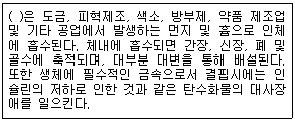
- 납화합물
- 비소화합물
- 수은화합물
- 크롬화합물
(정답률: 57%)
31. 다음에서 설명하고 있는 Darwin의 이론은?
- 종분화설
- 돌연변이설
- 적자생존설
- 중간교란설
(정답률: 65%)
32. 천이가 점차 진행되어 가면서 일반적으로 나타나는 생지화학적 순환의 변화에 관한 설명으로 거리가 먼 것은?
- 내부순환은 증가한다.
- 영양물질의 보존력은 증가한다.
- 물질순환은 개방적으로 되어간다.
- 필수원소의 대사 회전 시간과 저장력은 증가한다.
(정답률: 60%)
33. 다음 ( )안에 내용이 가장 알맞게 짝지어진 것은?
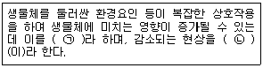
- ㉠ 상승효과, ㉡ 상쇄효과
- ㉠ 상쇄효과, ㉡ 내성의 법칙
- ㉠ 보상효과, ㉡ 생명의 특징
- ㉠ 상승효과, ㉡ 최소량의 법칙
(정답률: 75%)
34. 생물종 보존을 위한 접근방법으로 적합하지 않은 것은?
- 정부의 적극적인 홍보 및 연구지원
- 민간단체들의 종보전을 위한 적극적인 활동
- 교육기관을 통한 지속적인 연구와 전문인력의 양성
- 해충의 생물학적 방제를 위해 화학물질 대신 국외의 천적을 도입
(정답률: 81%)
35. 생태계의 구성요소를 “비생물-생산자-소비자-분해자”의 순서대로 올바르게 표현한 것은
- 햇빛 – 무우 – 해충 – 참새
- 초원 – 메뚜기 – 두꺼비 – 매
- 이산화탄소 – 풀 – 여치 – 햇빛
- 이산화탄소 – 풀 – 여치 – 지렁이
(정답률: 77%)
36. 식물이나 동물의 사체를 섭식하는 동물로부터 시작되는 먹이연쇄를 부식연쇄(detritus food chain)라 한다. 다음 중 부식연쇄를 구성하는 구성원으로서 적당하지 않은 것은?
- 지렁이
- 진딧물
- 흰개미
- 먼지벌레
(정답률: 65%)
37. 다음 중 폐기물의 해양투기로 인한 해양오염을 방지하기 위한 국제협약(의정서)은?
- 몬트리올의정서
- 리우협약
- 도쿄의정서
- 런던협약
(정답률: 63%)
38. 수질오염의 영향에 관한 설명 중 옳지 않은 것은?
- 부영양성 호소의 퇴적물에서 자라는 혐기성 세균에서 독소가 발생하여 어류가 죽기도 한다.
- 부영양성 호소는 용존산소와 영양염류가 풍부하여 빈영양성 호소보다 생물다양성이 높다.
- 카드뮴 농축으로 인체의 골격이나 뼈에 영향을 미치면 골연화증이나 골다공증 등을 유발한다.
- ABS(알킬벤젠설폰산염)의 거품은 태양광선을 차단하여 수중식물의 광합성을 방해하며, 혐기성 미생물의 번식을 촉진시켜 물의 자정능력을 잃게 한다.
(정답률: 68%)
39. 해양환경 중 용승(upwelling)현상에 대한 설명으로 가장 거리가 먼 것은?
- 페루의 광대한 멸치어장은 주로 용승현상에 의해 형성된 것이다.
- 용승은 영양소를 가진 차가운 심해의 물이 수면으로 올라오는 현상이다.
- 용승은 계절적 현상으로 연안풍이 육지쪽 또는 연안과 수직으로 부는 곳에서 일어난다.
- 뒤섞여 위로 올라온 영양소는 해양먹이사슬의 기초를 제공하는 광합성 생물에 이용된다.
(정답률: 68%)
40. 생태적 천이과정에 대한 설명으로 옳지 않은 것은?
- 천이는 방향성이 있어서 예측할 수 있다.
- 천이 초기 보다는 진행된 단계에서 종의 변화가 빠르게 나타난다.
- 초기에 보였던 식물종들이 단계가 진행하면서 사라질 수 있다.
- 총 생산량이 점진적으로 증가하여 극상단계에서는 최고에 도달한다.
(정답률: 50%)
3과목: 형태학
41. 뿌리유형 중 내초에서부터 바깥쪽으로 내생적으로 만들어지는 뿌리는?
- 주근
- 측근
- 근모
- 부정근
(정답률: 69%)
42. 표피조직에 대한 설명이 옳은 것만으로 짝지어진 것은?
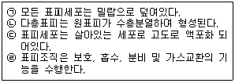
- ㉠, ㉡
- ㉡, ㉢
- ㉢, ㉣
- ㉠, ㉣
(정답률: 60%)
43. 유세포와 후각세포의 가장 큰 차이점은?
- 세포의 크기
- 2차벽의 존재여부
- 세포벽의 비후양상
- 세포의 대사활동 가능여부
(정답률: 58%)
44. 배 과육의 껄끄럽고 단단한 돌세포는?
- 섬유(fiber)
- 큐티클(cuticle)
- 보강세포(sclereid)
- 유조직(parenchyma)
(정답률: 75%)
45. 절지동물문의 협각아문(Chelicerata)에 대한 설명 중 맞지 않는 것은? (문제 오류로 가답안 발표시 4번으로 발표되었지만 확정 답안 발표시 1, 4번이 정답처리 되었습니다. 여기서는 가답안인 4번을 누르면 정답 처리 됩니다.)
- 자유생활을 하며, 모두 육서종이다.
- 다리는 네쌍이며, 배는 6~14절이다.
- 거미류, 전갈류, 응애(진드기)류 등이 이에 속한다.
- 몸은 머리, 가슴, 배의 세 부분으로 이루어져 있고, 더듬이는 두 쌍이 있다.
(정답률: 75%)
46. 쌍자엽식물의 배발생의 유형으로 거리가 먼 것은?
- 가지형
- 국화형
- 마디풀형
- 십자화형
(정답률: 50%)
47. 다음의 곤충신경계 중 눈, 촉각, 그리고 다른 감각구조로부터 들어오는 정보를 통합하는 일을 하는 것은?
- 복신경삭
- 식도하 신경절
- 식도상 신경절
- 체절에 있는 신경절
(정답률: 49%)
48. 척추동물을 분류할 때 양막류에 해당하지 않는 것은?
- 조류
- 양서류
- 파충류
- 포유류
(정답률: 64%)
49. 아래의 설명과 관련 있는 동물문에 속하는 동물은?
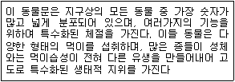
- 투구게
- 해파리
- 민달팽이
- 꼬마선충
(정답률: 68%)
50. 다음 ( )안에 알맞은 기관은?
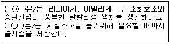
- ㉠ 위(stomach) , ㉡ 이자(pancreas)
- ㉠ 간(liver), ㉡ 담낭(gallbladder)
- ㉠ 담낭(gallbladder), ㉡ 간(liver)
- ㉠ 이자(pancreas), ㉡ 담낭(gallbladder)
(정답률: 69%)
51. 중복수정의 결과 형성된 산물의 표현으로 가장 적합한 것은?
- 배와 배젖
- 2개의 떡잎
- 2개의 배(embryo)
- 씨앗이 2개 들어있는 과일
(정답률: 60%)
52. 동물의 조직을 결합조직, 상피조직, 근육조직, 신경조직으로 구분할 때, 결합조직에 해당되는 것은?
- 내피
- 뉴런
- 혈액
- 평활근
(정답률: 70%)
53. 초본성 식물의 잎에서 일액현상(guttation)이 일어나는 조직은?
- 배수조직(hydathode)
- 염류분비선(salt gland)
- 수송세포(transfer cell)
- 선모(glandular trichome)
(정답률: 60%)
54. 감자와 같이 지하경이 비대하여 육질의 덩어리로 된 것은?
- 포복경(runner)
- 괴경(tuber)
- 편경(cladodium)
- 인경(bulb)
(정답률: 72%)
55. 해파리류, 말미잘류, 산호류와 같은 동물이 속하며 촉수를 지니거나 체축(body axis)을 포함하는 면으로 분할하면 방사대칭 또는 좌우대칭의 특징을 지닌 동물군은?
- 편형동물문
- 연체동물문
- 자포동물문
- 절지동물문
(정답률: 65%)
56. 가도관(tracheid)의 경우는 어디를 통하여 물의 수송이 이루어지는가?
- 벽공
- 천공
- 하피
- 천공과 벽공
(정답률: 45%)
57. 회전난할(rotational cleavage)이 일어나는 동물은?
- 사람
- 성게
- 까치
- 개구리
(정답률: 56%)
58. 경골어류에 있는 유체기관으로 평형을 유지하고 물속에서 움직이지 않고 머물 수 있게 해주는 기관은?
- cloaca
- gill raker
- operculum
- swim bladder
(정답률: 73%)
59. 출처를 알 수 없는 목본식물의 줄기를 관찰한 결과 나이테를 볼 수 없었다. 이 식물에 대한 추정으로 맞는 것은?
- 나이테가 없으므로 이 식물은 쌍떡잎식물일 것이다.
- 이 식물은 생장 환경이 상당히 어려운 고산에서 채집된 식물일 것이다.
- 이 식물은 연중 생장이 고른 열대우림지역에서 채집된 식물일 것이다.
- 나이테가 없으므로 이 식물은 겉씨식물(나자식물 gymnosperm)일 것이다.
(정답률: 58%)
60. 신경계의 기본단위인 뉴런에서 말단으로부터 뉴런의 나머지 부분으로 자극을 전달하는 역할을 하는 곳은?
- 축삭
- 세포체
- 신경교
- 수상돌기
(정답률: 58%)
4과목: 보존 및 자원생물학
61. 육상 생물군집에서 종 풍부도(species richness)가 증가하는 일반적인 경우로 옳지 않은 것은?
- 고도가 낮을수록
- 강우량이 많을수록
- 태양광선을 많이 받을수록
- 지질학적으로 단순한 지형일수록
(정답률: 72%)
62. 종자은행의 종 보전을 위한 역할 중 내포하고 있는 문제점으로 옳지 않은 것은?
- 유해한 돌연변이의 누적
- 발아력의 점차적인 감소
- 종자를 휴면상태로 장기간 저장
- 정기적으로 종자의 질 검사와 종자 표본의 재확보 필요
(정답률: 52%)
63. 다음 중 [보기]가 설명하는 것으로 가장 적합한 것은? (단, 광의적인 의미)
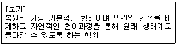
- 대체
- 방치
- 재생
- 창출
(정답률: 73%)
64. 생산적 사용 가치(productive use value) 측면에서 동식물 자원의 잠재적가치로서 가장 큰 것에 해당하는 것은?
- 고기
- 연료용 목재
- 밧줄과 건축재
- 신약개발과 신물질 합성
(정답률: 79%)
65. 온난화 등에 따른 기후변화가 동식물에 미치는 영향에 대한 설명으로 옳은 것은?
- 이산화탄소 농도의 증가로 인해 생물다양성이 증가한다.
- 급격한 온도 상승은 식물종의 생육저하와 함께 종 사멸로 이어질 수 있다.
- 식생대의 단순화와 생물이 서식 가능한 지역의 감소는 생물종 간의 경쟁 작용을 낮춘다.
- 이산화탄소 농도의 증가는 상대적으로 질소량의 감소를 유발하나 식물체의 생장에 미치는 영향은 없다.
(정답률: 75%)
66. 멸종속도에 대한 설명으로 가장 적합한 것은?
- 인류 역사상 멸종이 가장 심각하게 일어난 곳은 도서이다.
- 구대륙 열대림 국가에서 원시림 서식지 손실비율이 가장 큰 나라는 짐바브웨이다.
- 현재 일어나고 있는 멸종의 대부분은 인위적인 영향보다 자연적인 영향에 의한 것이다.
- 대륙종이 해양종보다 문(phylum) 단계에서 다양성이 높아 몇 개의 대륙종이 멸종되어도 생물다양성에 막대한 손실을 가져온다.
(정답률: 70%)
67. 다음은 개체군 보호에 관한 사항이다. ( )안에 들어간 용어로 가장 적합한 것은?
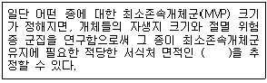
- 최소존속면적
- 최대존속면적
- 최소동태면적
- 최대동태면적
(정답률: 62%)
68. 멸종되기 쉬운 종이 아닌 것은?
- 유전적 변이가 높은 종
- 지리적 분포 범위가 좁은 종
- 행동권이 넓어야 생육이 가능한 종
- 특이한 생태적 지위를 요구하는 종
(정답률: 69%)
69. 보전(Conservation)과 보존(Preservation)의 차이점을 가장 적합하게 설명한 것은?
- 보전은 협의의 보존을 의미한다.
- 보전은 주로 자연의 흐름에 역행하는 인위적인 관리를 대원칙으로 한다.
- 보전은 큰 복합체나 일반적 체계를 대상으로 하며, 보존은 특정개체, 집단, 종 등의 구체적인 대상을 가진다.
- 보전은 자원을 유지하기 위해 관리가 필요한 경우에, 보존은 자원을 유지하기 위해 관리가 필요하지 않은 경우에 사용된다.
(정답률: 73%)
70. 보전생물학의 목적을 가장 명확하게 설명한 것은?
- 파괴된 환경을 파괴되기 이전의 상태로 되돌리는 것
- 종이 절멸되는 것을 막기 위해 인위적으로 번식을 유도하는 것
- 절멸되거나 절멸의 위험이 있는 종을 동물원 또는 식물원으로 모두 이동시켜 잘 기르는 것
- 종, 군집, 생태계에 대한 인간 활동을 명확히 이해하고 종의 절멸을 막기위한 실질적인 보전방법을 발전시키는 것
(정답률: 77%)
71. 다음 [보기]가 설명하는 것으로 옳은 것은?
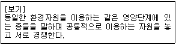
- 숙주(host)
- 길드(guild)
- 분해자(decomposers)
- 중추종(keystone species)
(정답률: 71%)
72. 먹이사슬을 거치며 발생하는 생물 농축현상을 유발하는 물질로 옳은 것은?
- 독성물질
- 산성도가 큰 화합물
- 소화가 되지 않는 물질
- 체내에 오래 잔류하는 물질
(정답률: 75%)
73. 식물보전센터에서 위험종의 유전변이를 보존하기 위해 제시한 표본추출지침상 다음 중 우선 수집이 요구되는 종은?
- 진화적으로 중요한 종
- 경제적 가치를 지닌 종
- 절멸의 위험이 있는 종
- 분류학적으로 유일한 종
(정답률: 73%)
74. 생물다양성의 장기적 보전을 위하여 개체들을 인위적으로 조절된 여건하에서 보호, 관리하는 서식지 외(ex-situ) 보전방법과 거리가 먼 것은?
- 동물원
- 수족관
- 야생방사
- 종자은행
(정답률: 76%)
75. 식물원의 역할과 기능에 대해 설명한 것으로 옳지 않은 것은?
- 일반대중에게 보전의 중요성을 교육시키는 역할도 수행한다.
- 건조표본을 통해 식물의 분포나 서식지 요구도에 대한 정보를 제공한다.
- 희귀종보다는 일반적으로 널리 알려져 있는 종을 재배하는 것이 주 기능이다.
- 유전적 변이를 충분히 유지시키기 위해 보존하는 생물의 종당 개체수를 늘릴 필요가 있다.
(정답률: 70%)
76. 소개체군에서 나타나는 유전변이성의 소실에 대한 내용으로 가장 거리가 먼 것은?
- 근교 약세
- 타식 강세
- 진화적 유연성 소실
- 생식능력의 차이로 인한 유효개체군 크기의 감소
(정답률: 56%)
77. 현재의 생물다양성 감소의 가장 큰 위협요인인 것은?
- 서식지 손실
- 외래종 도입
- 질병의 확산
- 사냥(수렵, 어렵 등)
(정답률: 74%)
78. 핵심종(keystone species)의 설명으로 가장 적합한 것은?
- 핵심종은 군집 또는 생태계 내에서 개체수가 가장 많은 종으로 그 군집 또는 생태계를 지탱하는 중추적 역할을 하는 종이다.
- 핵심종은 생태계내의 영양단계상 주로 하부에 위치하여 상위 포식자와 하위 생산자 또는 초식동물들을 중간에서 조절하는 중추적 역할을 하는 종이다.
- 핵심종은 가장 하위영양단계의 생물군의 보전을 위해서 핵심종을 최대한으로 번창시킬 수 있도록 개체군의 크기를 조절해야만 한다.
- 군집 또는 생태계 내에서 핵심종이 사라지면 영양단계가 붕괴되어 궁극적으로 그 군집 또는 생태계가 붕괴된다.
(정답률: 70%)
79. 생물다양성 보호라는 측면에서 볼 때, 우량품종의 작물이 보급됨에 따라 발생되는 주요 문제점으로 가장 적합한 것은?
- 수확량이 너무 많아 가격이 폭락한다.
- 보급 이전에 재배되던 재배품종이 사라진다.
- 우량 품종을 보급 받은 농민과 보급 받지 못한 농민 사이에 갈등이 생긴다.
- 우량 품종만을 재배하기 때문에 우량 품종의 유전자 변형이 심하게 나타난다.
(정답률: 67%)
80. 일반적으로 종자은행에 저장하기 어려운 난저장성(recalcitrant) 종자자원에 해당하는 것은?
- 쌀
- 감자
- 옥수수
- 코코아
(정답률: 73%)
5과목: 자연환경관계법규
81. 습지보전법상 “연안습지” 용어의 정의로 옳은 것은?
- 습지수면으로부터 수심 10m까지의 지역을 말한다.
- 광합성이 가능한 수심(조류의 번식에 한한다.)까지의 지역을 말한다.
- 만조 때 수위선과 지면의 경계선으로부터 간조 때 수위선과 지면의 경계선까지의 지역을 말한다.
- 지하수위가 높고 다습한 곳으로서 간조에서 수위선과 지면이 접하는 경계면 내에서 광합성이 가능한 수심지역까지를 말한다.
(정답률: 58%)
82. 환경정책기본법령상 하천에서의 디클로로메탄의 수질 및 수생태계기준(mg/L)으로 옳은 것은? (단, 사람의 건강보호 기준으로 한다.)
- 0.008이하
- 0.01이하
- 0.02이하
- 0.⑤이하
(정답률: 42%)
83. 생물다양성 보전 및 이용에 관한 법률상 환경부장관이 반출승인대상 생물자원에 대하여 국외반출을 승인하지 않을 수 있는 경우로 틀린 것은?
- 극히 제한적으로 서식하는 경우
- 경제적 가치가 낮은 형태적ㆍ유전적 특징을 가지는 경우
- 국외에 반출될 경우 그 종의 생존에 위협을 줄 우려가 있는 경우
- 국외로 반출될 경우 국가 이익에 큰 손해를 입힐 것으로 우려되는 경우
(정답률: 74%)
84. 국토의 계획 및 이용에 관한 법률상 중앙 및 지방도시계획위원회의 심의를 거치지 않고 1회에 한하여 2년 이내의 기간 동안 개발행위허가의 제한을 연장할 수 있는 지역은?
- 지구단위계획구역으로 지정된 지역
- 녹지지역으로 수목이 집단적으로 자라고 있는 지역
- 계획관리지역으로 조수류 등이 집단적으로 서식하고 있는 지역
- 개발행위로 인하여 주변의 환경, 경관, 미관 등이 오염되거나 손상될 우려가 있는 지역
(정답률: 47%)
85. 자연공원법규상 공원관리청이 규정에 의해 징수하는 점용료 등의 기준요율에 관한 사항 중 ( ) 안에 알맞은 것은? (단, 다른 법령에 특별히 정한 기준은 제외한다.)
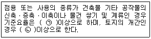
- ㉠ 인근 토지 임대료 추정액의 100분의 25
㉡ 수확예상액의 100분의 10 - ㉠ 인근 토지 임대료 추정액의 100분의 25
㉡ 수확예상액의 100분의 25 - ㉠ 인근 토지 임대료 추정액의 100분의 50
㉡ 수확예상액의 100분의 10 - ㉠ 인근 토지 임대료 추정액의 100분의 50
㉡ 수확예상액의 100분의 25
(정답률: 50%)
86. 자연공원법상 공원구역에서 공원사업 외에 공원관리청의 허가를 받아야하는 경우와 가장 거리가 먼 것은? (단, 대통령령으로 정하는 경미한 행위는 제외한다.)
- 자갈을 채취하는 행위
- 물건을 쌓아 두거나 묶어 두는 행위
- 100명의 사람이 단체로 등산하는 행위
- 나무를 베거나 야생식물을 채취하는 행위
(정답률: 73%)
87. 백두대간 보호에 관한 법률상 산림청장은 백두대간보호 기본계획을 몇 년마다 수립하여야 하는가?
- 1년
- 3년
- 5년
- 10년
(정답률: 57%)
88. 자연환경보전법상 사용되는 용어와 그 정의의 연결이 옳지 않은 것은?
- 자연환경 – 지하ㆍ지표(해양을 제외한다) 및 지상의 모든 생물과 이들을 둘러싸고 있는 비생물적인 것을 포함한 자연의 상태(생태계 및 자연경관을 포함한다)를 말한다.
- 자연환경의 지속가능한 이용 – 자연환경을 체계적으로 보존ㆍ보호 또는 복원하고 생물다양성을 높이기 위하여 자연을 조성하고 관리하는 것을 말한다.
- 자연생태 – 자연의 상태에서 이루어진 지리적 또는 지질적 환경과 그 조건 아래에서 생물이 생활하고 있는 모든 현상을 말한다.
- 생물다양성 – 육상생태계 및 수생생태계(해양생태계를 제외한다)와 이들의 복합생태계를 포함하는 모든 원천에서 발생한 생물체의 다양성을 말하며, 종내ㆍ종간 및 생태계의 다양성을 포함한다.
(정답률: 57%)
89. 독도 등 도서지역의 생태계보전에 관한 특별법규상 특정도서에서의 행위허가 신청서 작성 시 첨부서류 목록으로 옳지 않은 것은?
- 당해 지역의 주민 의견을 수렴한 동의서
- 당해지역의 토지 또는 해역이용계획 등을 기재한 서류
- 행위 대상지역의 범위 및 면적을 표시한 축척 2만 5천분의 1이상의 도면
- 당해행위로 인하여 자연환경에 미치는 영향예측 및 방지대책을 기재한 서류
(정답률: 63%)
90. 환경정책기본법령상 아황산가스(SO2)의 대기환경기준으로 옳은 것은? (단, 24시간 평균치이다.)
- 0.02ppm 이하
- 0.03ppm 이하
- 0.⑤ppm 이하
- 0.06ppm 이하
(정답률: 40%)
91. 생물다양성 보전 및 이용에 관한 법률상 생태계교한 생물이 아닌 것은?(오류 신고가 접수된 문제입니다. 반드시 정답과 해설을 확인하시기 바랍니다.)
- 떡붕어
- 황소개구리
- 단풍잎돼지풀
- 서양등골나물
(정답률: 66%)
92. 야생생물 보호 및 관리에 관한 법규상 유해야생동물과 가장 거리가 먼 것은?
- 분묘를 훼손하는 멧돼지
- 전주 등 전력시설에 피해를 주는 까치
- 장기간에 걸쳐 무리를 지어 농작물 또는 과수에 피해를 주는 참새, 어치 등
- 비행장 주변에 출현하여 항공기 또는 특수건조물에 피해를 주는 조수류(멸종위기 야생동물 포함)
(정답률: 65%)
93. 다음은 국토기본법령상 국토계획평가의 절차이다. ( )안에 알맞은 것은?
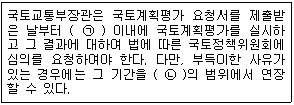
- ㉠ 15일, ㉡ 10일
- ㉠ 15일, ㉡ 15일
- ㉠ 30일, ㉡ 10일
- ㉠ 30일, ㉡ 15일
(정답률: 38%)
94. 야생생물 보호 및 관리에 관한 법규상 시장ㆍ군수ㆍ구청장은 박제업자에게 야생동물의 보호ㆍ번식을 위하여 박제품의 신고 등 필요한 명령을 할 수 있는데, 박제업자가 이에 따른 신고 등 필요한 명령을 위반한 경우 각 위반차수별 (개별)행정처분기준으로 가장 적합한 것은?
- 1차 : 경고, 2차 : 경고, 3차 : 영업정지 3개월, 4차 : 등록취소
- 1차 : 경고, 2차 : 영업정지 1개월, 3차 : 영업정지 3개월, 4차 : 등록취소
- 1차 : 영업정지 1개월, 2차 : 영업정지 3개월, 3차 : 영업정지 6개월, 4차 : 사업장 이전
- 1차 : 영업정지 1개월, 2차 : 영업정지 3개월, 3차 : 영업정지 6개월, 4차 : 등록취소
(정답률: 68%)
95. 국토의 계획 및 이용에 관한 법령상 기반시설 중 광장에 해당하지 않는 것은?
- 교통광장
- 일반광장
- 특수광장
- 건축물부설광장
(정답률: 51%)
96. 국토의 계획 및 이용에 관한 법령상 용도지구 중 보호지구를 세분한 것에 해당하지 않는 것은?
- 생태계보호지구
- 주거시설보호지구
- 중요시설물보호지구
- 역사문화환경보호지구
(정답률: 51%)
97. 습지보전법상 습지보전을 위해 설치할 수 있는 시설과 가장 거리가 먼 것은?
- 습지를 연구하기 위한 시설
- 습지를 준설 및 복원하기 위한 시설
- 습지오염을 방지하기 위한 시설
- 습지생태를 관찰하기 위한 시설
(정답률: 60%)
98. 자연환경보전법상 생태.자연도의 작성ㆍ활용기준 중 ( ) 안에 알맞은 것은?
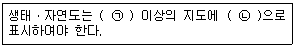
- ㉠ 2만5천분의 1, ㉡ 점선
- ㉠ 2만5천분의 1, ㉡ 실선
- ㉠ 5만분의 1, ㉡ 점선
- ㉠ 5만분의 1, ㉡ 실선
(정답률: 60%)
99. 다음 중 자연환경보전법상 다음 [보기]가 설명하는 지역으로 옳은 것은?
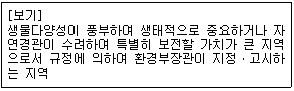
- 자연유보지역
- 자연경관보호지역
- 생태.경관보전지역
- 생태계변화관찰지역
(정답률: 65%)
100. 환경정책기본법령상 수질 및 수생태계 상태별 생물학적 특성 중 생물지표종(저서생물)의 생물등급이 다른 하나는?
- 가재
- 옆새우
- 꽃등에
- 민하루살이
(정답률: 66%)